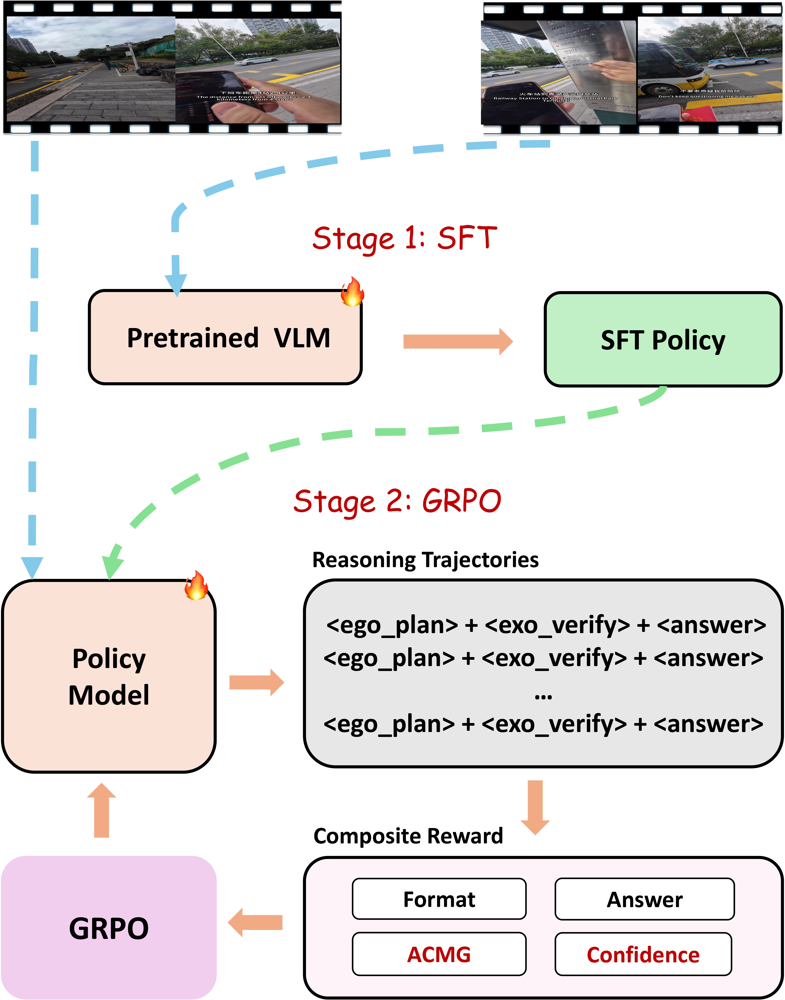

|
Yogesh Kulkarni I am a Computer Science Ph.D. student at the School of Computing and Augmented Intelligence (SCAI), Arizona State University, advised by Dr. Pooyan Fazli and part of the People and Robots Laboratory (PeRL). My research focuses on enhancing the reasoning and alignment of multimodal large language models (MLLMs) for Video Understanding through efficient, self-supervised preference optimization and reinforcement learning (GRPO). Previously, I graduated from the University of Southern California (USC) with a Master's in Computer Science. At USC, I was a Graduate Research Assistant at the USC Institute for Creative Technologies (ICT), where I worked with 3D Point Clouds—particularly at the intersection of GANs, Diffusion Models, and Gaussian Splatting for style transfer. In Summer 2023, I had the privilege to intern at Nokia Bell Labs, where I contributed to efficient geo-distributed LLM training across heterogeneous clusters. My journey began with a Bachelor's in Computer Engineering from the Pune Institute of Computer Technology. I grew up in New Delhi, India. |

|
ResearchMy research goal is to build models that can see, hear, and reason about the world. I focus on developing efficient and robust training methods for multimodal foundation models, using reinforcement learning and preference-alignment to ground language in video and audio. |
|
AVATAR: Reinforcement Learning to See, Hear, and Reason Over Video
Yogesh Kulkarni, Pooyan Fazli Conference on Computer Vision and Pattern Recognition (CVPR) 2026 project page / arXiv This paper introduces AVATAR, a framework that improves multimodal reasoning by addressing limitations in standard reinforcement learning. It uses an off-policy architecture to improve data efficiency and introduces Temporal Advantage Shaping (TAS), a novel credit assignment strategy to focus learning on critical reasoning steps, achieving significant gains on audio-visual benchmarks. |
|

EgoVITA: Learning to Plan and Verify for Egocentric Video Reasoning
Yogesh Kulkarni, Pooyan Fazli arXiv, 2025 project page / arXiv This paper proposes EgoVITA to address the challenge of "catastrophic forgetting" in egocentric video understanding. By separating reasoning into an egocentric planning stage and an exocentric verification stage, our RL framework teaches models to anticipate future visual states rather than just imitating fixed sequences. It utilizes novel Anticipatory Cross-Modal Grounding (ACMG) rewards to ensure plans are visually grounded, outperforming baselines on tasks like EgoBlind and EgoOrient while preserving generalization on standard video benchmarks. |

VideoPASTA: 7K Preference Pairs That Matter for Video-LLM Alignment
Yogesh Kulkarni, Pooyan Fazli Conference on Empirical Methods in Natural Language Processing (EMNLP) 2025 project page / arXiv This paper introduces VideoPASTA, which improves video models by training them with specially crafted "bad examples" (adversarial preference pairs) that target common errors in spatial, temporal, and cross-frame understanding. It shows this targeted approach is highly efficient, achieving significant performance gains using only 7k preference pairs. |

VideoSAVi: Self-Aligned Video Language Models without Human Supervision
Yogesh Kulkarni, Pooyan Fazli Conference on Language Modeling (COLM 2025) project page / arXiv This paper presents VideoSAVi, a method to teach video models better spatial and temporal reasoning without needing human supervision. It works by having the model critique its own reasoning errors to automatically create preference data for training, achieving strong results on benchmarks efficiently. |

ReGATE: Learning Faster and Better with Fewer Tokens in MLLMs
Chaoyu Li, Yogesh Kulkarni, Pooyan Fazli arXiv, 2025 arXiv This paper proposes ReGATE (Reference-Guided Adaptive Token Elision), a method to accelerate MLLM training by selectively processing crucial tokens. It uses a teacher-student framework to dynamically identify and bypass less informative tokens, achieving state-of-the-art results on benchmarks like MVBench up to 2x faster and with significantly fewer tokens. |

EnsembleNTLDetect: An Intelligent Framework for Electricity Theft Detection in Smart Grid
Yogesh Kulkarni, Sayf Hussain Z, Krithi Ramamritham, Nivethitha Somu ICDM (workshops), 2021 DOI This paper introduces "EnsembleNTLDetect," a robust framework designed to detect electricity theft in smart grids using consumer energy data. It uses a combination of techniques to handle missing data, data imbalance, and high dimensionality, employing an ensemble machine learning model to achieve high accuracy in identifying theft patterns compared to existing methods. |

Kryptonite: An Adversarial Attack Using Regional Focus
Yogesh Kulkarni, Krisha Bhambani ACNS, 2021 Springer This paper proposes "Kryptonite," an efficient adversarial attack that fools image classifiers (especially for medical images) by adding tiny, hard-to-see noise mainly to the most important part of the image (Region of Interest). It causes significant misclassification with less image distortion compared to other methods. |

Intensive Image Malware Analysis and Least Significant Bit Matching Steganalysis
Yogesh Kulkarni, Anurag Gorkar IEEE Big Data, 2020 DOI This paper introduces "AnImAYoung," a framework to detect malware hidden within images using various methods like embedding code in metadata (EXIF) or using steganography (LSB Matching). It analyzes image data/metadata for suspicious code and uses an efficient machine learning ensemble to detect hidden data in image pixels. The system is designed to be fast and accurate, making it suitable for analyzing large volumes of image data. |
Miscellanea |
|
Teaching
Graduate Teaching AssociateArizona State University CSE 485: Computer Science Capstone I Spring 2025 CSE 240: Intro to Programming Languages Fall 2024, Spring 2025 CSE 220: Programming for Computer Engineering Fall 2024 |
|
Website's original source code |